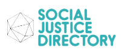

Our Goal
The Social Justice Directory (SJD) is a comprehensive encyclopedia of different charities and Non-Profit Organizations. Our goal is to spread awareness on social justice issues and help connect people and organizations using information. SJD displays general and contact information on different charities and Non-Profit organizations with the intent to help poeple who care about their local communities.
Featured Organizations
Voting Rights Alliance
The Voting Rights Alliance is a growing non-partisan network of organizations, activists, and legislators working to restore and protect voting rights from concerted attacks and to ensure all our votes are fairly counted.
Climate Justice
Climate Justice Alliance (CJA) formed in 2013 to create a new center of gravity in the climate movement by uniting frontline communities and organizations into a formidable force.
American Association of Retired Persons
AARP is a United States–based interest group focusing on issues affecting those over the age of fifty. According to the organization, it had more than 38 million members as of 2018. The magazine and bulletin it sends to its members are the two largest-circulation publications in the United States.
National Association for the Advancement of Colored People
From police brutality to COVID-19 to voter suppression, Black communities are under attack. We work to disrupt inequality, dismantle racism, and accelerate change in key areas including criminal justice, health care, education, climate, and the economy. When it comes to civil rights and social justice, we have the unique ability to secure more wins than anyone else. Help make racial equity a reality.
Feeding America
The Feeding America network is the nation’s largest domestic hunger-relief organization, working to connect people with food and end hunger. Donors, staff, and volunteers all play an important role in our efforts to end hunger in the United States.